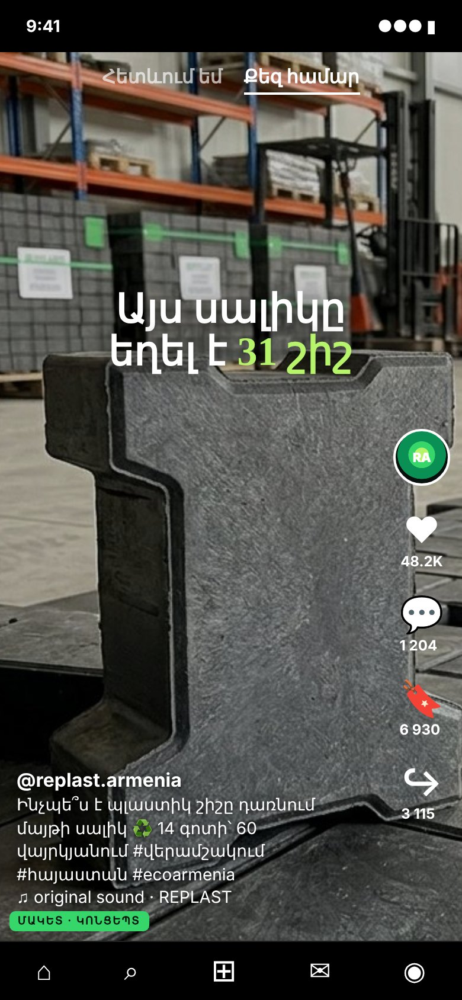

Վերամշակման առաջին կանոնը՝ ճիշտ հումք
REPLAST CORE-ն անցնում է փոխակրիչով և բաժանվում ըստ նյութի տեսակի՝ քաոսային խառնուրդից մոնոհոսքերի։

Ինչպե՞ս է արտադրանքը վերածվում flakes-ի
Շրեդերը — խոշոր հումքի կոպիտ առաջնային մանրացում։
Գրանուլյատորը — վերահսկվող մանրացում մինչև կայուն ֆրակցիա։
Թեփուկների չափը ազդում է լվացման, չորացման և էքստրուզիայի վրա. չափազանց խոշոր ֆրակցիան վատ է լվացվում, չափազանց մանրը՝ տարվում է հոսքով։


Մաքրությունը որոշում է նյութի որակը
Կախված աղտոտվածության տեսակից և պոլիմերից՝ կիրառվում են լվացող և թույլ ալկալային համակարգեր։ Համընդհանուր բաղադրատոմս գոյություն չունի — կազմը ընտրվում է հոսքի համար։
Կեղտոտ թեփուկները անցնում է ջրի և սարքավորման միջով — և տեսողականորեն դառնում է մաքուր։


Ինչպե՞ս տարանջատել նյութերը մանրացումից հետո
Մեթոդը ընտրվում է կոնկրետ խառնուրդի և նյութերի ֆիզիկական հատկությունների համար։ HDPE-ն և PP-ն լողում են (ρ<1), PET-ը և PVC-ն սուզվում են (ρ>1) — սա տարանջատման հիմքն է։

Ջուրը պետք է հեռանա հաջորդ փուլից առաջ
Մնացորդային խոնավությունը էքստրուդերում տաքանալիս գոլորշիանում է՝ ստեղծելով պղպջակներ և ծակոտիներ, իսկ PET-ի համար առաջացնում է հիդրոլիտիկ դեստրուկցիա — մոլեկուլային զանգվածի և ամրության անկում։


Գծի սիրտը՝ էքստրուդերը
Չոր flakes-ը անցնում է ՊԻՆԴ → ՓԱՓՈՒԿ → ՀԱԼՈՒՅԹ ուղին պտուտակի երկայնքով՝ տաքացվող գլանում։ Ջերմաստիճանները իլյուստրատիվ են և կախված են պոլիմերից։
ԻԼՅՈՒՍՏՐԱՏԻՎ ԻՆԺԵՆԵՐԱԿԱՆ ԱՐԺԵՔՆԵՐ — մեկ ջերմաստիճանը բոլոր պոլիմերների համար հարմար չէ։


Հալույթից՝ ստանդարտ հումք


Ինչպե՞ս են գրանուլները դառնում արտադրանք


Մեկ շարունակական արտադրական համակարգ
Ընտրեք հանգույց — մեքենան կառանձնանա, աջում կբացվի տեխնիկական նկարագրությունը։


REPLAST-ը սոցիալական ցանցերում
Չորս հարթակ՝ չորս տարբեր դեր։ Ներքևում մեր էջերի էկրանի նկարներն են ՄԱԿԵՏ · ԿՈՆՑԵՊՏ։ Սեղմեք նկարի վրա՝ մեծացնելու համար։

Պատրաստի արտադրանք, Reels, պատվերներ · 4 գրառում / շաբ.

«Ինչպես է պատրաստվում», 15–60 վ · 5 տեսանյութ / շաբ.

Համայնքներ, B2G, նախագծերի հաշվետվություն · 3 / շաբ.

Էքսկուրսիաներ, փորձարկումներ · 2 տեսանյութ / ամիս